快速开始
注册VNMesh用户
到VNMesh官网https://vnmesh.com, 点击右上角的 注册 按钮, 跳转到注册页面:
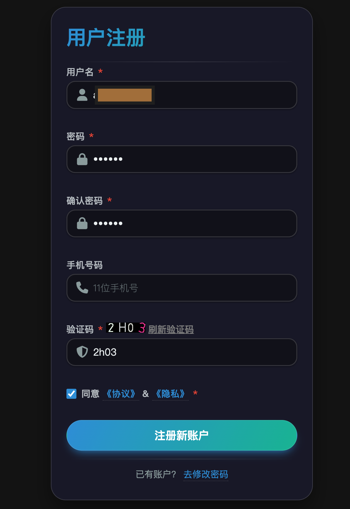
填写用户名、密码、验证码，勾选同意复选框，点击注册新账号，即可注册成功:
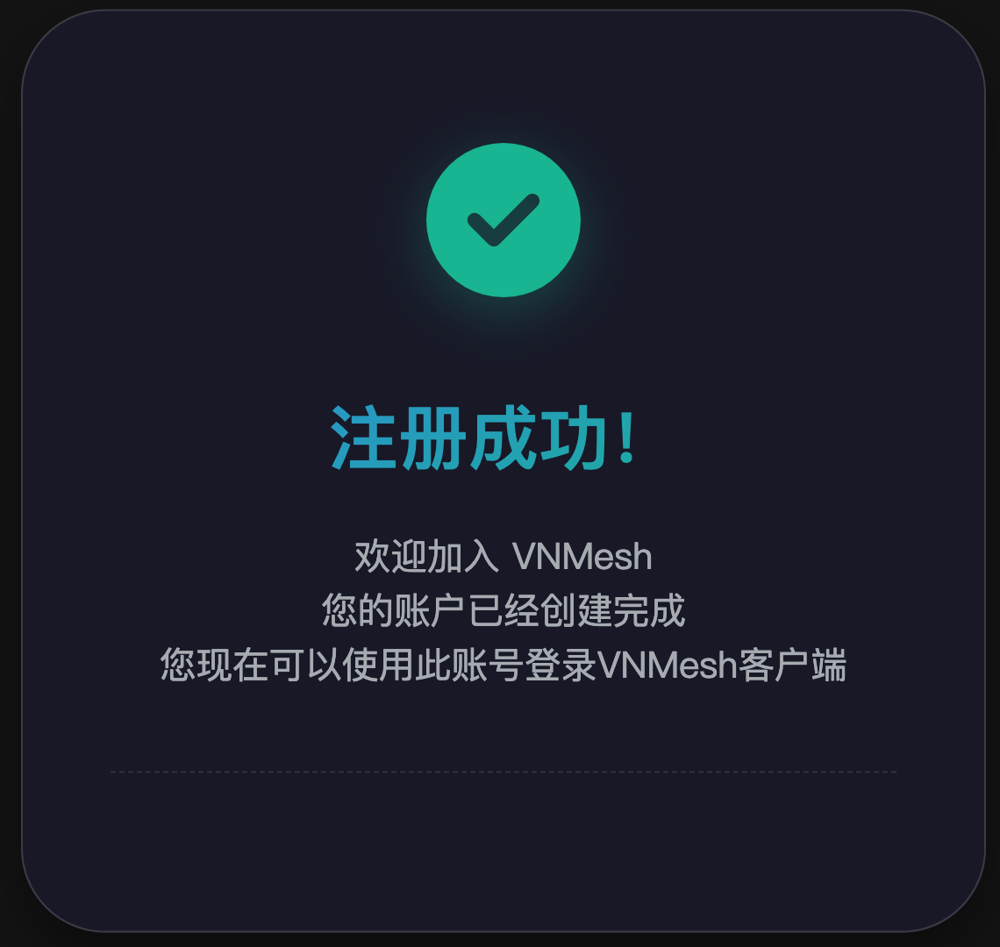
现在就可以去下载客户端使用了
下载VNMesh客户端
点击顶部导航栏的"内网穿透", 再点击"客户端下载"，跳转到下载页面，下载对应平台的客户端软件：
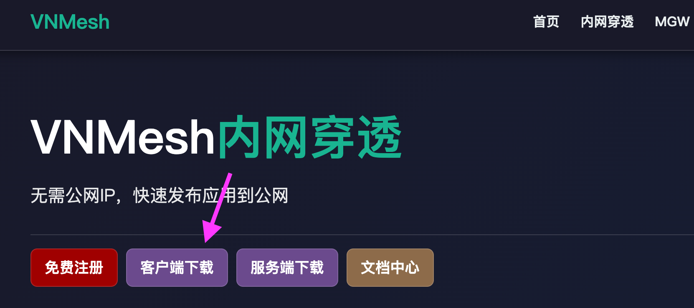
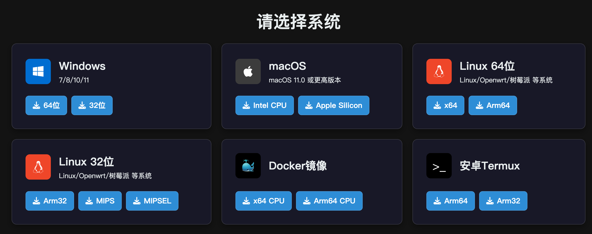
解压下载的文件，进入解压后的目录，双击运行 runcmd 或 vnmesh 程序。第一次运行会出现风险提示，点击"更多信息"，选择"仍要运行"即可。
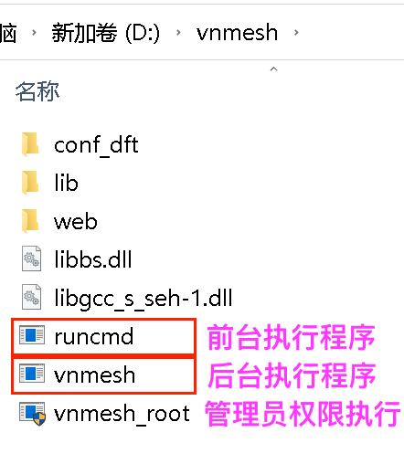


vnmesh: 后台运行程序, 运行后会自动切换到后台
runcmd: 前台运行程序, 可以输入交互式命令
tar xzf vnmesh_macos_apple_1.2.1.tar.gz #绿色部分改为您下载文件的名字 cd vnmesh xattr -rd com.apple.quarantine vnmesh #这条命令仅需执行一次, 后续不用再执行 ./vnmesh -d
vnmesh -d: 后台运行
vnmesh -c: 交互式前台运行
vnmesh -f: 非交互式前台运行
tar xzf vnmesh_linux_x64_1.2.1.tar.gz #绿色部分改为您下载文件的名字 cd vnmesh ./vnmesh -d
docker load -i vnmesh_docker_x64_1.2.1.tar #绿色部分改为您下载文件的名字 docker run -p 8888:8888 -d --name vnmesh vnmesh
运行vnmesh程序后，稍等几秒，程序初始化需要时间，之后就可以打开浏览器，访问 http://localhost:8888 或 http://目标IP:8888，打开如下页面:
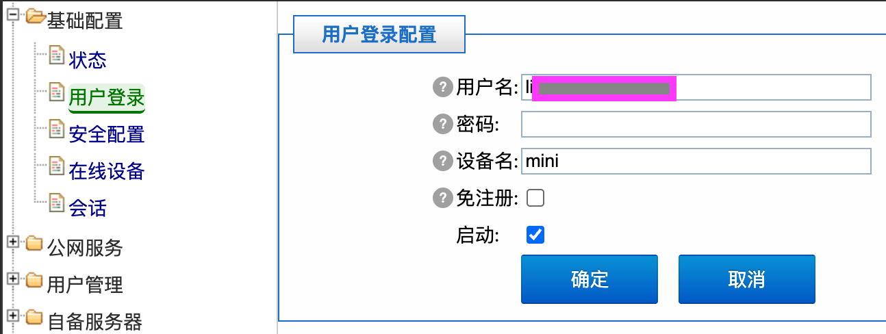
输入您刚才注册的用户名和密码，点击确定即可登录客户端了。
创建WEB映射
点击左侧导航栏的"公网服务 - 域名映射"
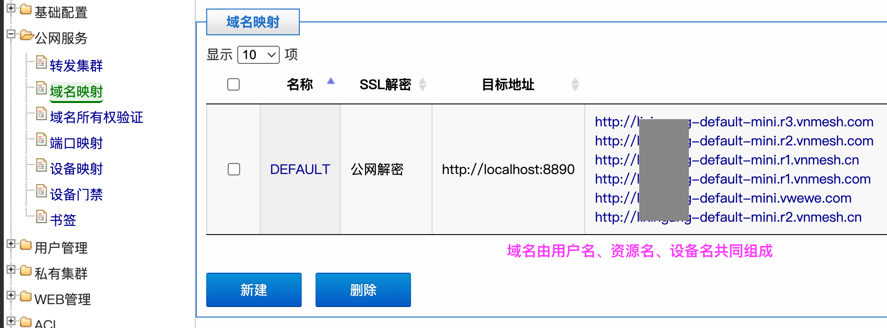
里面已经存在一条默认的WEB服务，您可以修改它，或者创建一个新的WEB服务。如下图创建了一个新的HTTP服务，填写名称和目标主机，点击确定即可。如果您希望通过HTTPS访问，可以选择SSL解密方式为"公网解密"或"本地解密"。
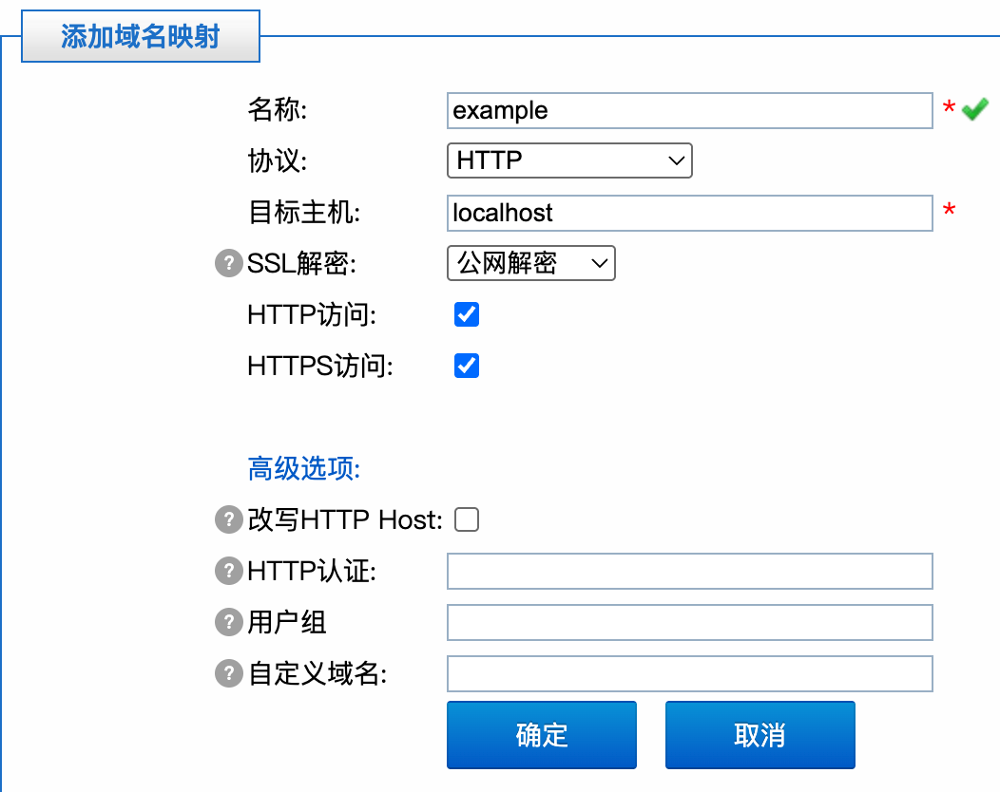
点击确定后会自动跳转到列表页面，点击列表页面里面的链接即可通过公网访问内网的HTTP服务了:
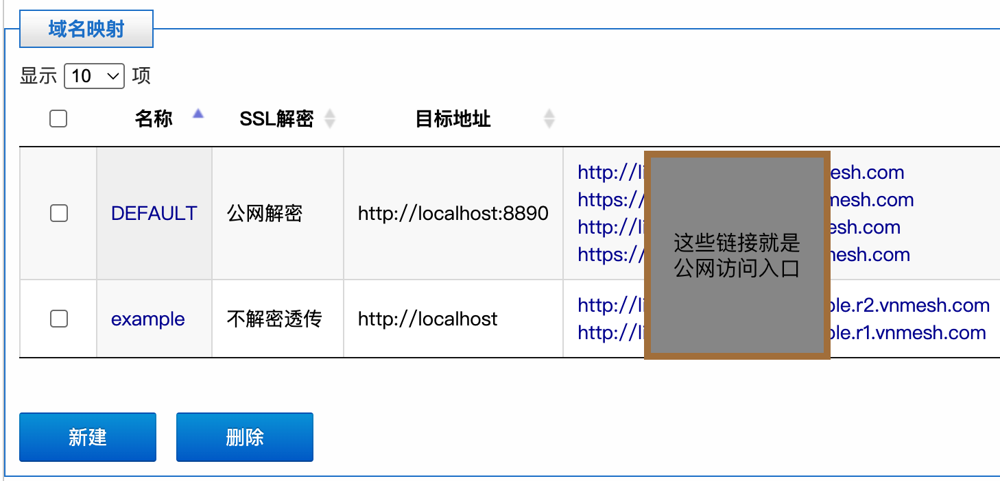
把这个链接发给您的朋友，让他们来访问你的服务吧。
创建TCP端口映射
点击左侧导航栏的"公网服务 - 端口映射"
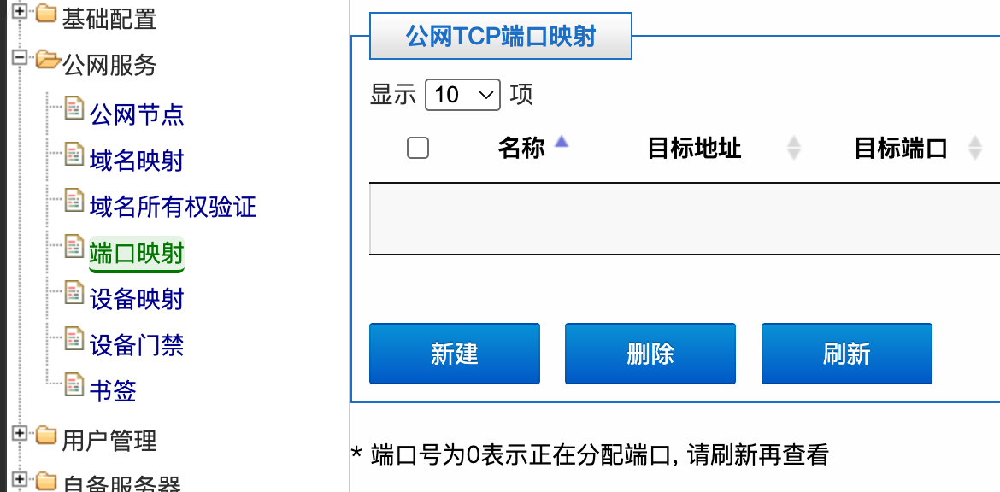
点击新建按钮，创建一个新的TCP端口映射: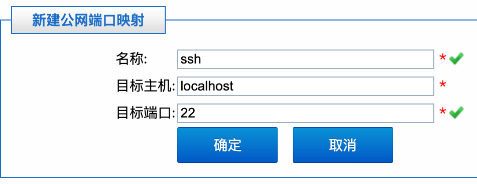
输入名称、目标主机、端口号，点击确定按钮即可创建新的TCP端口映射了：
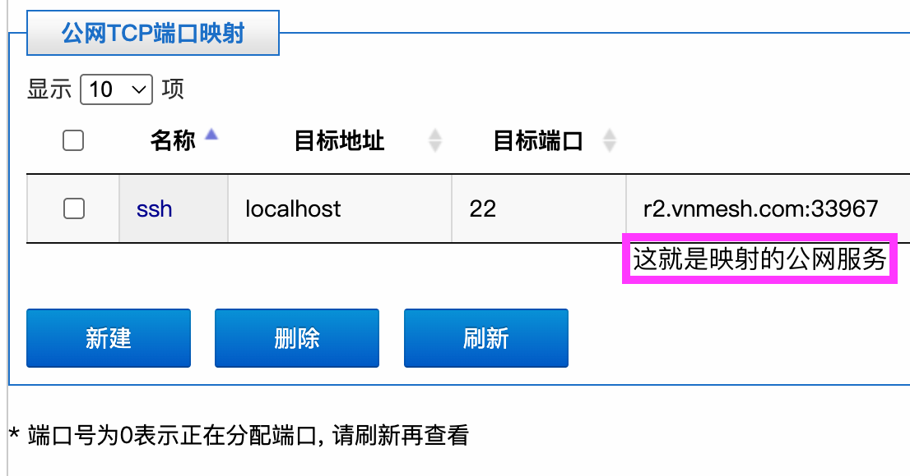
现在您可以通过公网访问您的ssh服务了：
ssh yourname@r2.vnmesh.com -p 33967